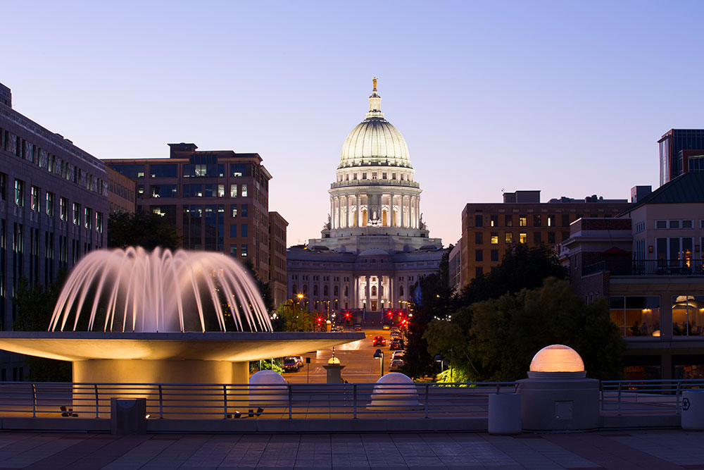

<ion-header translucent>
  <ion-toolbar>
    <ion-buttons slot="start">
      <ion-button routerLink="/components">
        <ion-icon name="arrow-back"></ion-icon>
      </ion-button>
    </ion-buttons>
    <ion-title>Card</ion-title>
  </ion-toolbar>
</ion-header>

<ion-content fullscreen class="ion-padding" scroll-y="false">
  <ion-card>
    
    <ion-card-header>
      <ion-card-subtitle>Destination</ion-card-subtitle>
      <ion-card-title>Madison, WI</ion-card-title>
    </ion-card-header>
    <ion-card-content>
      Founded in 1829 on an isthmus between Lake Monona and Lake Mendota, Madison was named the capital of the Wisconsin
      Territory in 1836.
    </ion-card-content>
  </ion-card>
</ion-content>